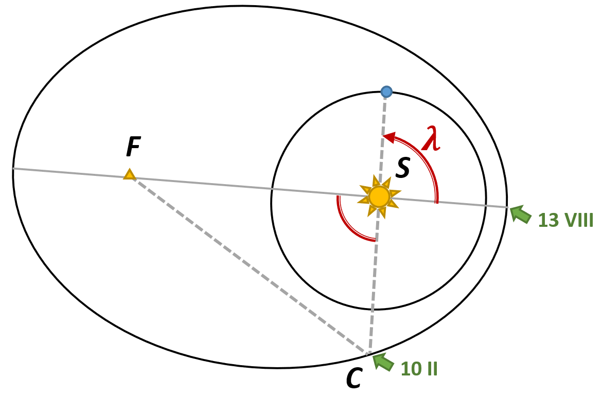

X18 (2018) — English translation
When passing perihelion and aphelion of the orbit, the radial velocity of the comet is $v_r=0$. From the graph: $q=1.24~\text{\text{a.u.}}$, $Q=5.68~\text{\text{a.u.}}$, from where $\frac{1+e}{1-e}=\frac{Q}{q}=4.58$. Total $e=\frac{Q-q}{Q+q}=0.64$.
It is convenient to consider a circular orbit with radius $a$. The body moves along it with the “first cosmic” speed $v=\sqrt{\frac{GM}{a}}$, which can be found from Newton’s II law $\frac{GM}{a^2} = \frac{v^2}{a}$. Then the total energy is \[E= \frac{mv^2}{2}-\frac{GMm}{a}=-\frac{GMm}{2a},\], from which it is easy to express $v= \sqrt{GM \left( \frac{2}{r}-\frac{1}{a} \right) }$.
By the Pythagorean theorem $v_r^2=v^2-v_\tau^2$, where $v_\tau$ is the tangential speed of the comet. Coming from ZSMI $L=mv_\tau r$, therefore $v_r^2=v^2 - \frac{L^2}{m^2r^2}$. Let's find $L$ using the equality $v=v_\tau$ at perihelion and aphelion: \[ v^2=GM \left( \frac{2}{a(1-e)} -\frac{1}{a}\right)=\frac{L^2}{m^2 a^2(1-e)^2}.\] As a result we get $v_\tau^2 = \frac{L^2}{m^2 r^2} = GM \frac{a(1-e^2)}{r^2}$ and $v_{r}=\sqrt{G M\left(\frac{2}{r}-\frac{1}{a}-\frac{a\left(1-e^{2}\right)}{r^{2}}\right)}$.
At point $r_0 = a(1-e^2)$ $\frac{dv_r}{dr}=0$ is satisfied. At the same time, the tangent to the graph is horizontal at $r_0=2.04~\text{\text{a.u.}}$, whence $a=3.46~\text{\text{a.u.}}$.
According to Kepler's third law, the period of revolution of a comet around the Sun is $T=\left( \frac{a}{\text{\text{a.u.}}} \right)^{3/2} ~\text{year}=2350~\text{сут}$. \[\text{13 августа 2015 year} + T = \text{middle января 2022 year}\]
The position of the Earth relative to the pericenter of the comet's orbit is uniquely determined (see Fig.) by the polar angle $\lambda (t)$.
Let's find the value $\lambda_c$ of this angle on February 10, 2015. In the triangle C (comet) - S (Sun) - F (second focus of the ellipse orbit), all three sides are known: \[ \begin{split} |SC|&=d_0-1 \text{\text{a.u.}}=2.70 \text{\text{a.u.}},\\ |SF|&=2ae=4.43 \text{\text{a.u.}}, \\ |FC|&=2a-|SC|=4.22 \text{\text{a.u.}} \end{split} \] Using the cosine theorem, we calculate $\lambda_c=68^\circ$. Then, at the time the comet passed perihelion in 2015: \[\lambda_{p,0} \simeq λ_0+\frac{\text{13 августа}-\text{10 февраля}}{365}\cdot 360^\circ = 68^\circ+180^\circ=-112^\circ.\]Since the period of revolution of the comet around the Sun is $6.44$ Earth years, $λ_{p,i}$ are separated from each other by an angle of $\Delta \lambda=0.44 \cdot 360^\circ=180^\circ-21.5^\circ$. After just three periods (see table) the moment will come when, at the moment of perihelion passage, the Earth will be between the Sun and the comet, almost on the same straight line: \[\text{13 августа 2015 year} + 3T = \text{ноябрь – декабрь 2034 year}.\]
$i$ $\lambda_{p,i}$ 0 $–112^\circ$ 1 $46.5^\circ$ 2 $–155^\circ$ 3 $3.5^\circ$

The orbital speed of a body depends only on its heliocentric distance r and the semi-major axis of the orbit a (point A2). At close approach to Jupiter $r=R$. Since the orbital eccentricity remains the same, the old and new orbit are similar: $\frac{a_l}{a}=\frac{q_l}{q}$, hence $a_l=7.53~\text{\text{a.u.}}$. The expression for the desired quantity is not difficult to write: \[ \Delta v^2=GM \left( \frac{2}{R}-\frac{1}{a}-\frac{2}{R}+\frac{1}{a_l} \right)=GM \frac{a-a_l}{a \cdot a_l}.\]It remains to find the value of the Kepler constant $GM$. Let's look at the graph data again: $v_{r,\text{max}} =13.4~\text{km}/\text{s}$ is achieved (point A4) at $r=a(1-e^2 )$. In this case, the expression for $v_r^2$ takes the form \[v_{r,\text{max}}^2=GM \left(\frac{2}{a(1-e^2)}-\frac{1}{a}-\frac{a(1-e^2)}{(a^2 (1-e^2 )^2} \right)=GM \frac{e^2}{a(1-e^2)}\] As a result, we have \[\Delta v^2=\frac{1-e^2}{e^2} \cdot \frac{a-a_l}{a_l} \cdot v_{r,\text{max}}^2=-140 \left( \text{km}/\text{s}\right)^2.\]
Let us calculate (up to sign) the velocities $v_r (R)$ and $v_\tau (R)$ when moving along the old and new orbits (point A3); to simplify the calculations, we put $GM = 1~\text{\text{a.u.}}$. Using these data, we calculate the angle that the comet’s speed formed with the line of sight: \[ |\psi|=\arctan \frac{v_\tau}{v_r}\]
$r=R=5.20~\text{and/but.be}$ $a,~\text{\text{a.u.}}$ $e$ $v_r,~\text{у.be.}$ $v_\tau,~\text{у.be.}$ |\psi| $7.53$ $0.64$ $0.296$ $0.405$ $54^\circ$ $3.46$ $0.142$ $0.275$ $63^\circ$